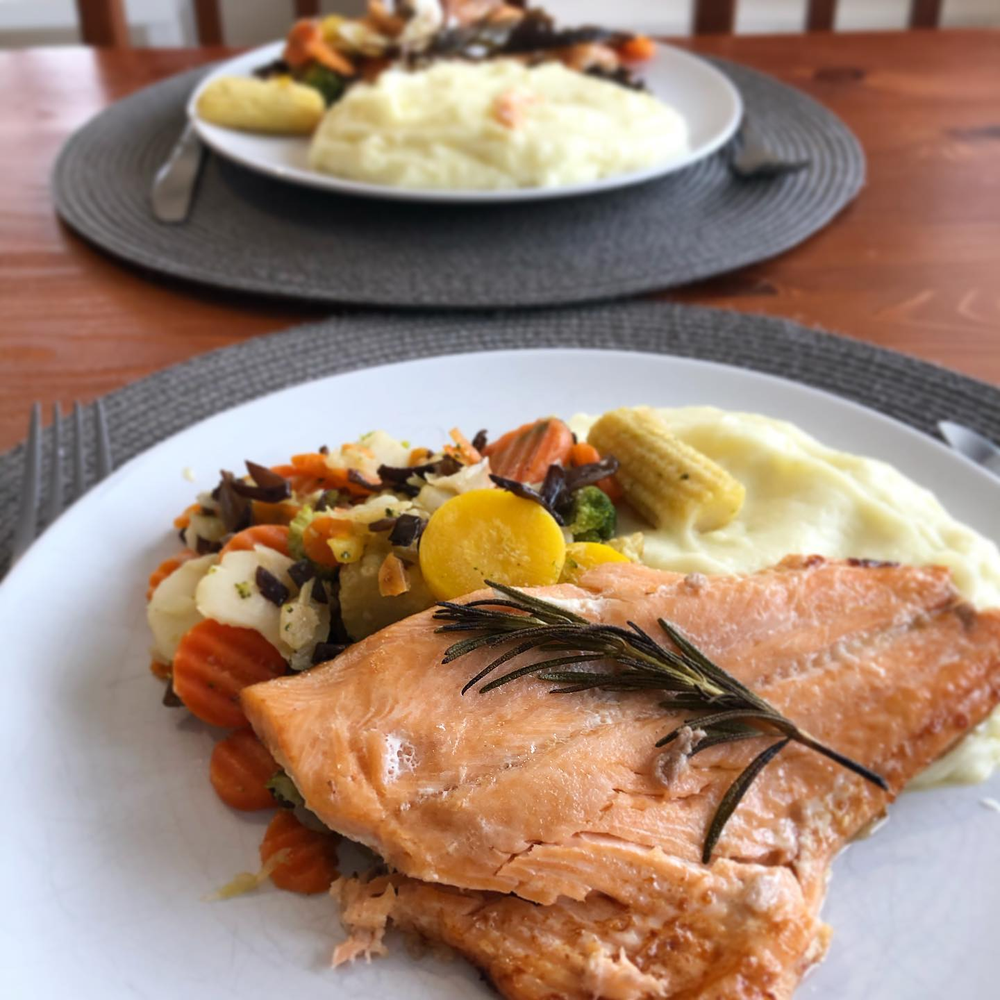

Pečený pstruh na masle podľa @season_in_the_kitchen — Normy Jedál
~DUHOVÝ PSTRUH SE ZELENINOU~
___
🐟400g filet pstruha duhového
🐟1 sáček zmražené zeleniny
🐟 máslo
🐟 tymián
🐟 sůl
🐟 případně bramborová kaše
___
🥣Postup:
___
Pstruha omyjeme, nasolíme a necháme stranou. Na pekáček si připravíme alobal s plátky másla. Pstruha přeneseme na alobal, poklademe dalšími plátky másla, kousky čerstvého tymiánu a zabalíme. V předehřáté troubě pečeme na 200°C cca 20min. Průběžně kontrolujeme. Zmraženou zeleninu připravíme v pánvi na másle. Pstruha můžeme podávat s bramborami nebo bramborovou kaší.
Výborné jídlo hotové za pár minut. 😊
___
#duhovypstruh #pstruhnamasle #stymiánem #pecenypstruhnamasle #zelenina #rybasezeleninou #fish #fishwithvegetables #seasoninthekitchen #homecooking #cookingtime #cookingathome #lunchtime